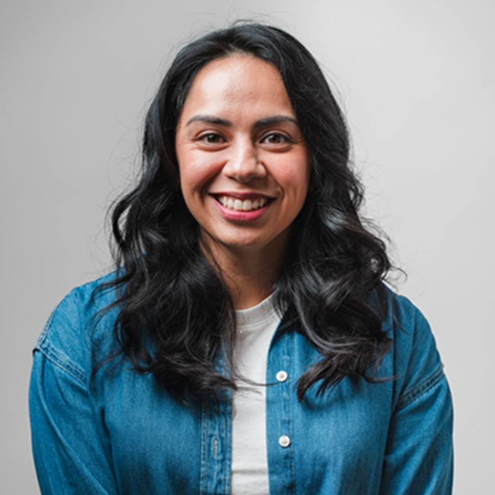
Senior Marketing Leader
Marketing found me, or maybe I found it. Either way, 15+ years in, I'm still genuinely excited about the work. There's something I love about the challenge of taking a big idea and figuring out how to make it land, whether that's a global brand transformation or a campaign that needs to be live by Friday.
I've had the privilege of leading marketing and communications for brands like Aux Sable, Isopure, Griffith Foods, Wells Enterprises, and USPR across B2C and B2B, across industries, and across a lot of time zones. What's stayed consistent throughout is how I approach the work: start with the insight, build toward the idea, develop the strategy, and never lose sight of the outcome.
I care a lot about storytelling, the kind that actually connects. Thought leadership, content strategy, experiential: these are the spaces where I feel most at home, because they're where brands get to show who they really are, not just what they sell. Some of my favorite work has come from translating a complex idea into something that genuinely resonates with an audience.
I'm also a people leader at heart. I've built and mentored teams throughout my career and that part of the job, watching someone grow, seeing a team find its rhythm, is something I find just as rewarding as any campaign result.
Outside of work, I'm usually planning my next trip, experimenting with something new in the kitchen, or out on a trail. I believe in getting outside, slowing down, and spending real time with the people who matter most.
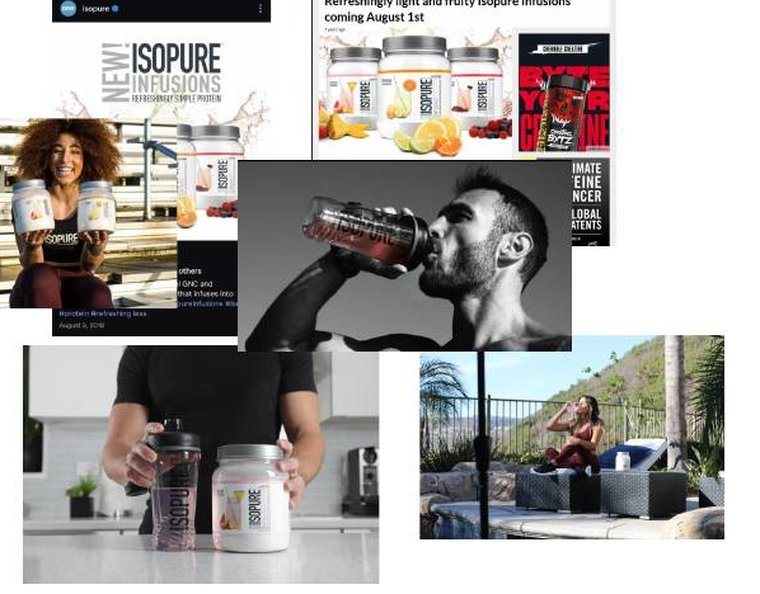
Led go-to-market strategy to expand Isopure beyond performance nutrition into a broader lifestyle audience.
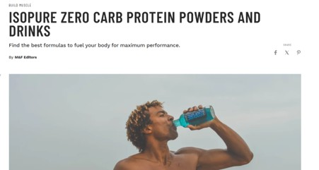
Co-led brand repositioning campaign to drive differentiation and expand reach to new consumer segments.
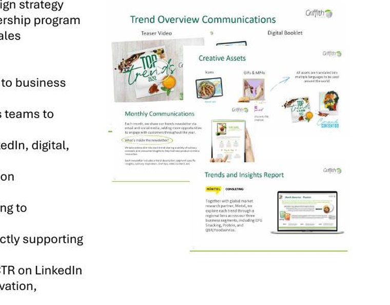
Built a flagship thought leadership platform to drive customer engagement and support sales conversations around innovation.
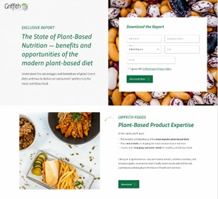
Launched a white paper series to elevate internal experts and generate high-quality pipeline leads.
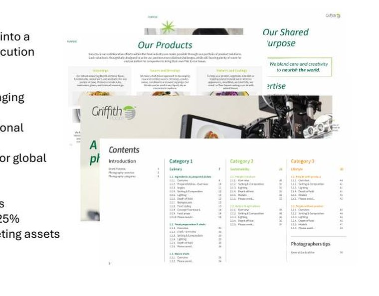
Transformed a fragmented global brand into a cohesive system across 5 regions and 12 markets.
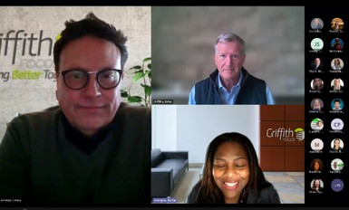
Strategic advisor and content lead for C-suite communications, building leadership presence across channels.
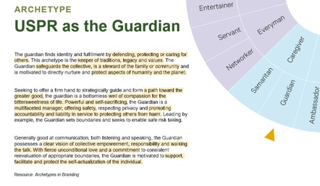
Led end-to-end brand repositioning, from archetype development to guidelines, elevating market relevance.
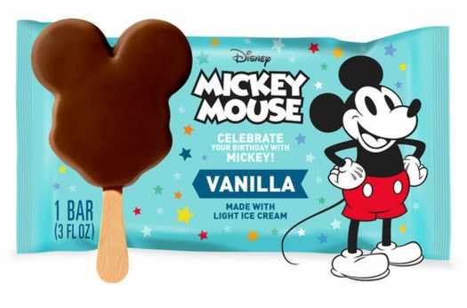
Managed and expanded high-value licensing partnerships, securing a Sega contract extension through 2028.
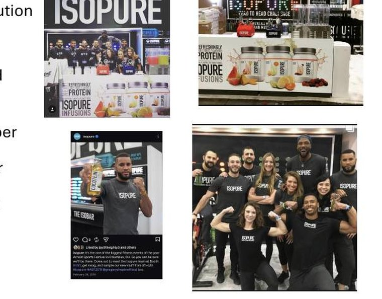
Led experiential marketing across major industry events driving awareness, engagement, and lead capture.
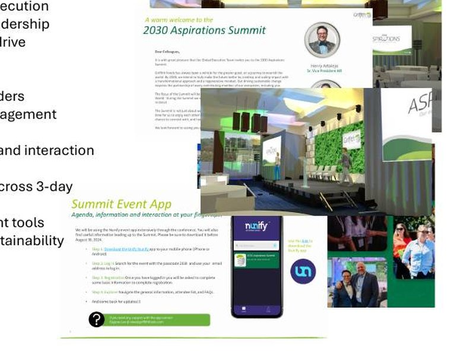
Designed and executed a 3-day global leadership summit for 230 leaders to launch Griffith's sustainability strategy.
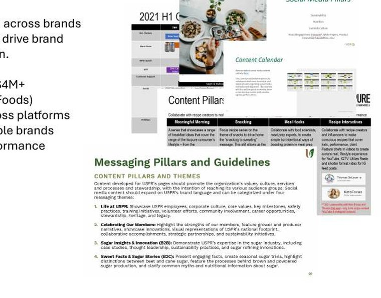
Owned digital and social strategy, budget, and execution across multiple brands over 7+ years.
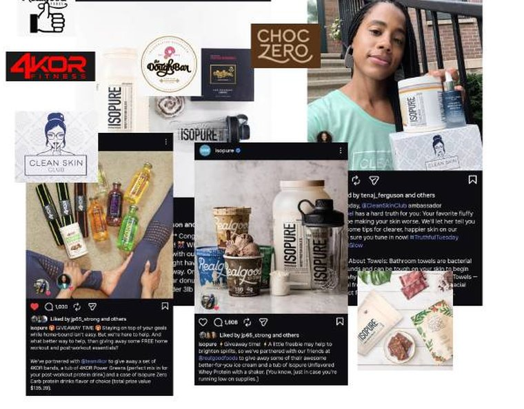
Led 9 cross-brand social partnerships generating massive reach and measurable follower growth.
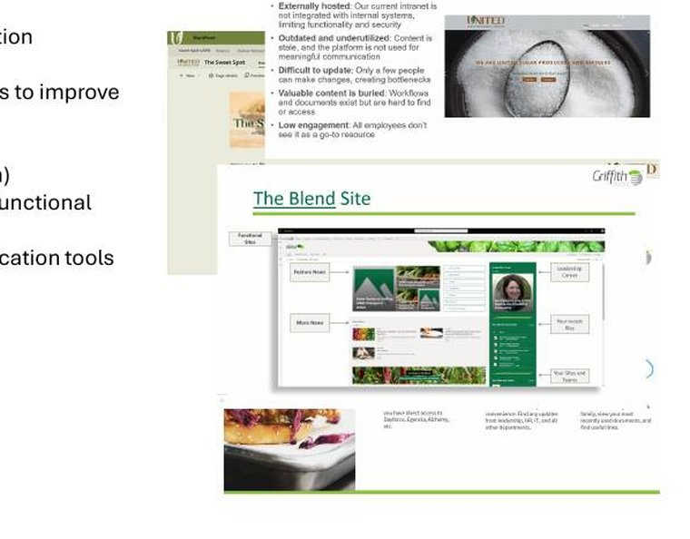
Built and launched internal communication platforms to improve collaboration and access across both organizations.
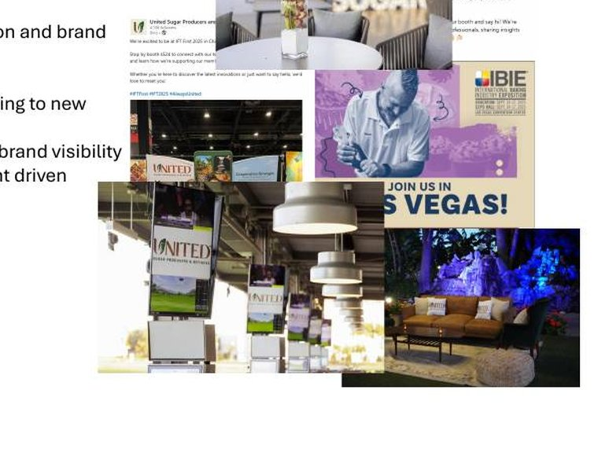
Led event strategy for demand generation and brand awareness, driving high-quality leads and customer relationships.
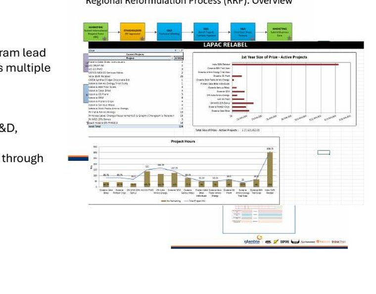
Owned the global innovation process across multiple brands, managing 12–15 concurrent projects spanning R&D, marketing, regulatory, and supply chain.